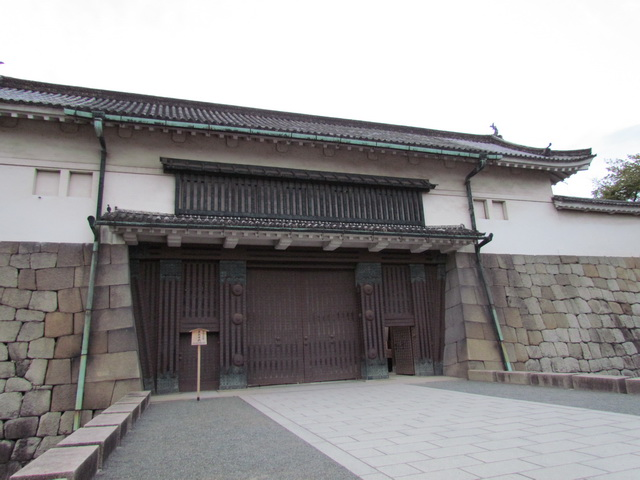

<!-- 拍門區 -->
<div id="open_the_door">
  <style>
    .shake-img {
      display: inline-block;
      transition: transform 0.1s;
      cursor: pointer;
      max-width: 100%;
      height: auto;
    }

    .shake {
      animation: shake 0.3s;
    }

    @keyframes shake {
      0% { transform: translate(0px, 0px) rotate(0deg); }
      20% { transform: translate(-2px, 0px) rotate(-2deg); }
      40% { transform: translate(2px, 0px) rotate(2deg); }
      60% { transform: translate(-2px, 0px) rotate(-2deg); }
      80% { transform: translate(2px, 0px) rotate(2deg); }
      100% { transform: translate(0px, 0px) rotate(0deg); }
    }
  </style>

  <div id="open_times">拍門次數：0</div>
  
  <br />
  <button id="reset_btn">重置拍門次數</button>
  <script src="js/open-the-door.js"></script>
</div>